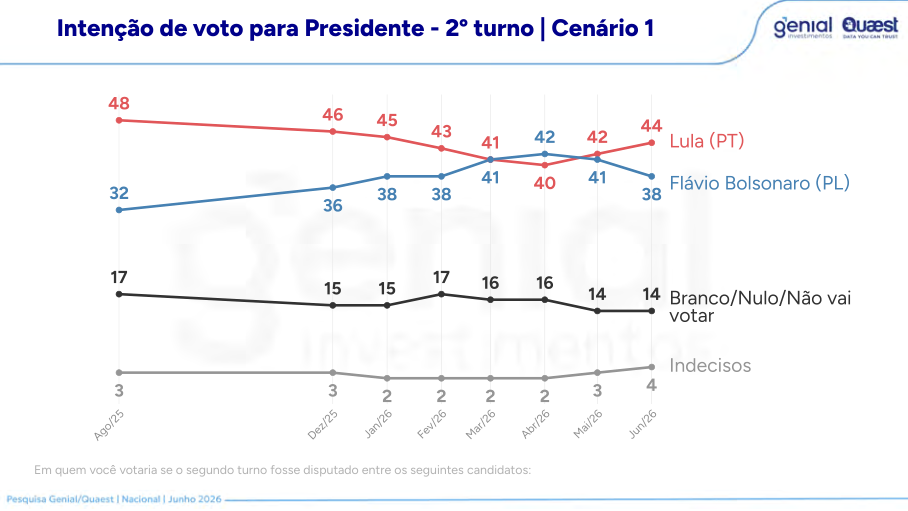
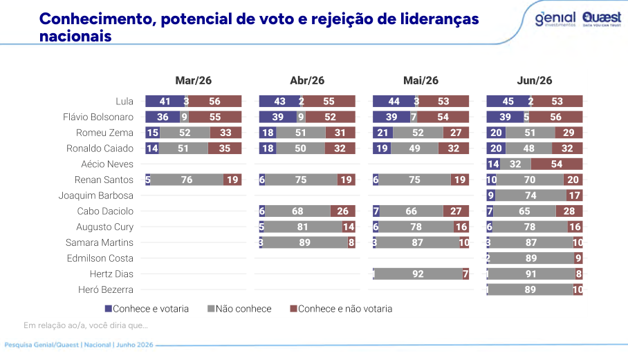
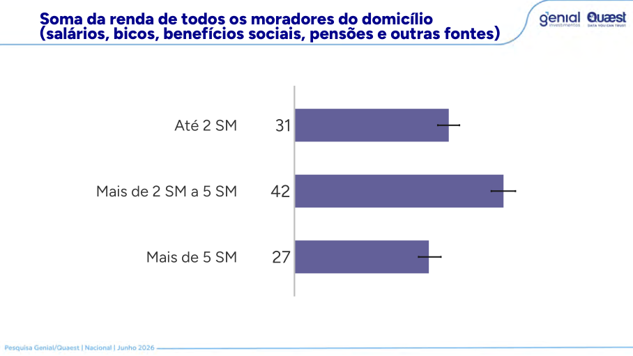
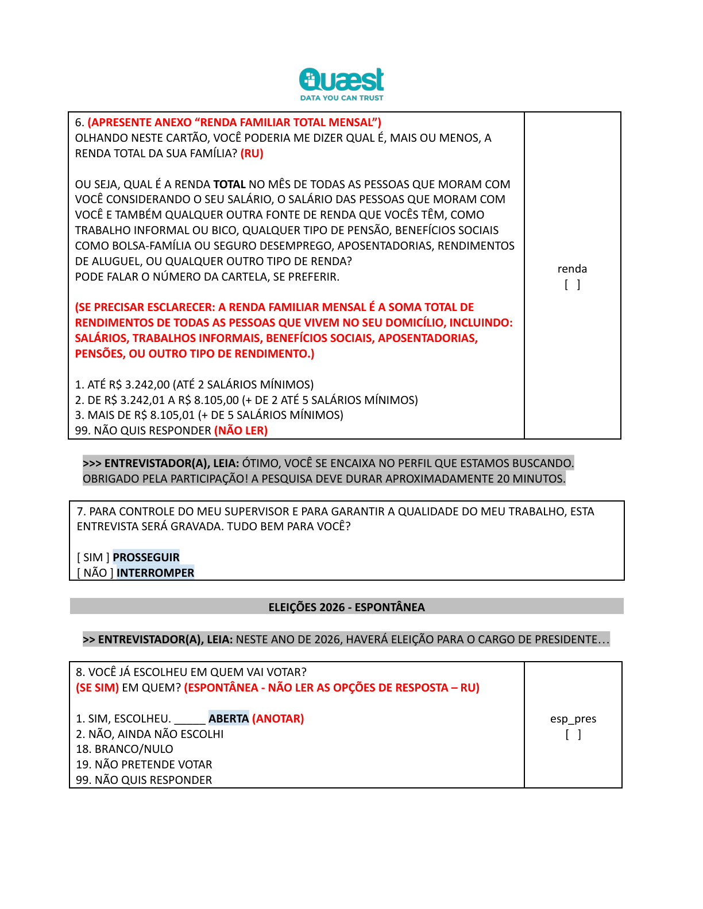
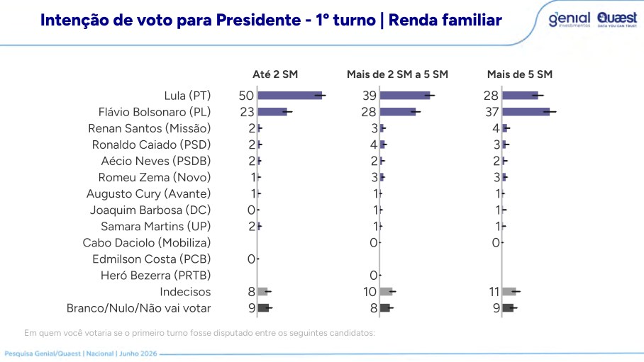
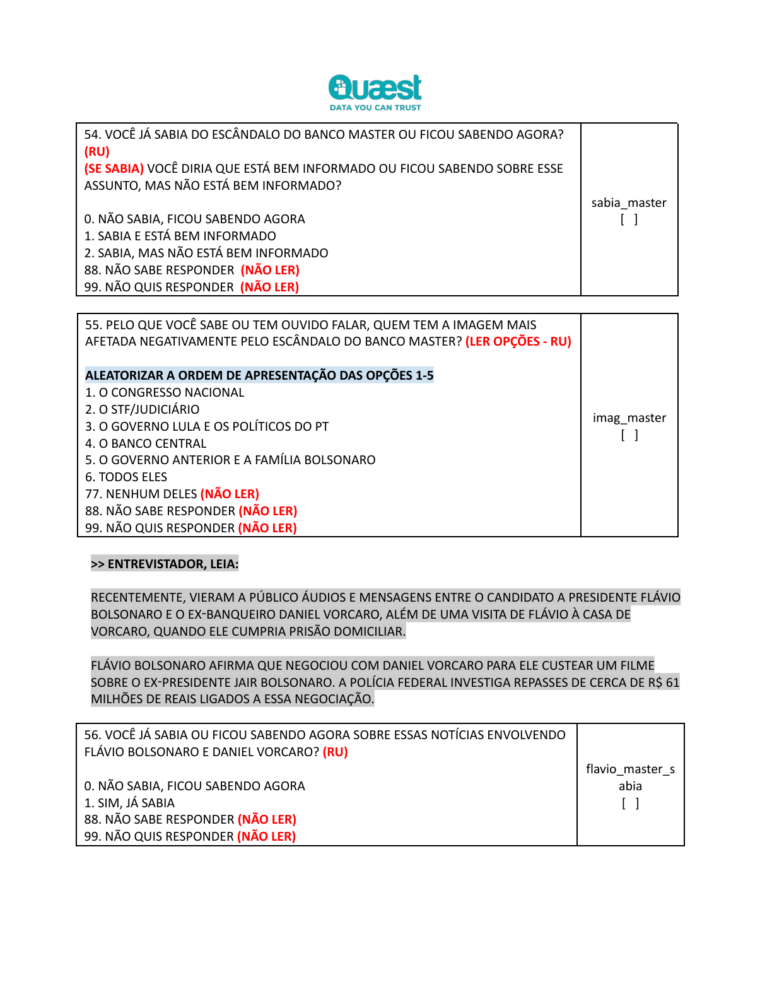
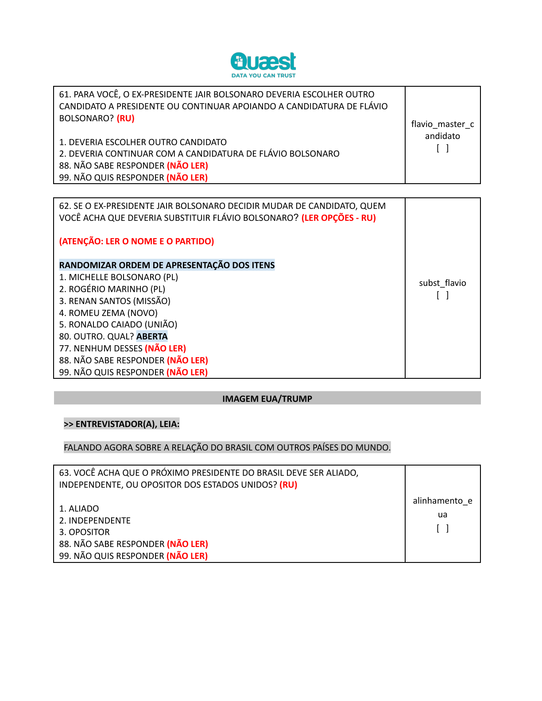
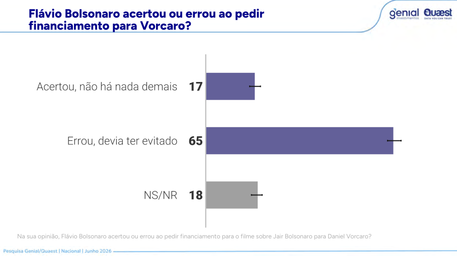
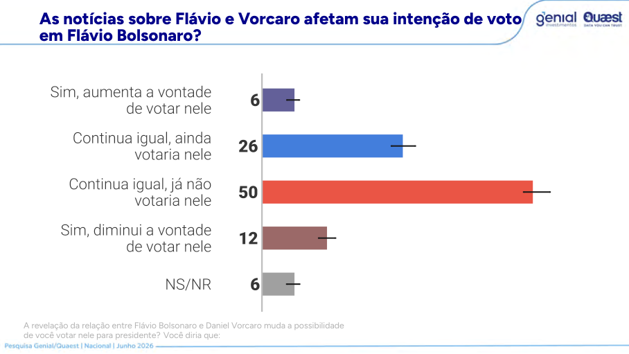

Melhor desenho do trio
Domiciliar presencial, 120 municípios, sorteio PPT de municípios e setores censitários, cotas e checagem por georreferenciamento e áudio.
A Quaest/Genial entrega a melhor arquitetura de campo entre os três dossiês recentes: domiciliar, setores censitários e cotas claras. Mas o questionário é um omnibus político enorme, o PDF público reordena a narrativa e omite perguntas importantes sobre troca de Flávio e imagem EUA/Trump.
Não há sinal grosseiro de fraude amostral. Há um desenho de campo melhor que Datafolha e Atlas, um perfil demográfico muito defensável e uma pergunta de renda bem formulada. O problema é outro: transparência incompleta, margem AAS para desenho complexo e um questionário tão longo que mistura voto, governo, programas, Master, Trump, tarifas, facções, economia, bets e ideologia.
Domiciliar presencial, 120 municípios, sorteio PPT de municípios e setores censitários, cotas e checagem por georreferenciamento e áudio.
A pergunta inclui todos os rendimentos do domicílio. Com PNADC anual 2025 visita 1, o alvo 31/42/27 ainda é mais rico que adultos 16+, mas o desvio é bem menor.
Espontânea, conhecimento, 1º turno e 2º turno vêm antes de Banco Master, Trump, tarifas e economia final.
As perguntas sobre substituir Flávio e imagem EUA/Trump aparecem no questionário, mas não no PDF público extraído.
Os três estudos medem a mesma disputa, mas com modos radicalmente diferentes. Isso importa pra caralho: presencial de fluxo, online RDR e domiciliar por setor censitário não são intercambiáveis.
| Instituto | Campo e modo | n | 1º turno Lula x Flávio | 2º turno Lula x Flávio | Amostra / transparência |
|---|---|---|---|---|---|
| Datafolha 09/05 | Presencial em pontos de fluxo; datas públicas inconsistentes no dossiê anterior. | 2.004 | 38 x 35, vantagem Lula de 3 p.p. | 45 x 45, empate. | Demografia boa; renda mais pobre que PNAD por pessoas; sem microdados/pesos. |
| AtlasIntel 18/05 | RDR online, questionário longo e módulo audiovisual no fim. | 5.032 | 47,0 x 34,3, vantagem Lula de 12,7 p.p. | 48,9 x 41,8, vantagem Lula de 7,1 p.p. | Sexo/idade/região bons; escolaridade superior inflada; rejeição vem depois do bloco Master. |
| Quaest 10/06 | Domiciliar presencial, 120 municípios, setores censitários, cotas e rake/MrP. | 2.004 | 39 x 29, vantagem Lula de 10 p.p. | 44 x 38, vantagem Lula de 6 p.p. | Melhor desenho; escolaridade cravada na PNADC 2026T1; renda levemente mais rica; omissões pontuais relevantes. |
A Quaest declara sorteio probabilístico de municípios e setores, coleta domiciliar, checagem de áudio de 30% e georreferenciamento. Isso é materialmente superior ao ponto de fluxo do Datafolha e ao online da Atlas para cobertura territorial.
Como Datafolha e Atlas, a Quaest divulga margem sob aproximação de amostra aleatória simples, embora o desenho real tenha conglomerados, cotas e pós-estratificação. Falta efeito de desenho.
A Quaest perguntou substituição de Flávio e imagem internacional, mas não publicou esses resultados no PDF. Em módulo politicamente sensível, isso é ruim.
Lula lidera com folga no 1º turno e abre 6 pontos contra Flávio no 2º. Ao mesmo tempo, aprovação do governo fica quase empatada e economia segue negativa. A foto é: Lula eleitoralmente forte, governo socialmente vulnerável.
Aprovação: 47 aprova, 48 desaprova, 5 NS/NR. Avaliação: 34 positiva, 26 regular, 38 negativa, 2 NS/NR.
Espontânea ainda tem 56% de indecisos. No estimulado, indecisos são 10% e branco/nulo/não vai votar são 9%.
| Cenário | Lula | Adversário | Dif. | Leitura |
|---|---|---|---|---|
| 2º turno contra Flávio Bolsonaro | 44% | 38% | +6 | Vantagem relevante, menor que a vantagem de 1º turno porque parte do antipetismo volta para Flávio. |
| 2º turno contra Romeu Zema | 45% | 35% | +10 | Zema continua menos competitivo nacionalmente que Flávio. |
| 2º turno contra Ronaldo Caiado | 45% | 35% | +10 | Caiado fica estável, mas distante. |
| 2º turno contra Renan Santos | 45% | 31% | +14 | Renan cresce, mas ainda depende de conhecimento e transferência. |


Para sexo, idade e região, o alvo certo é o eleitorado TSE. Para escolaridade e renda, a PNAD é melhor: renda não existe no cadastro eleitoral e escolaridade do título envelhece quando a pessoa não atualiza o registro.
| Dimensão | Corte | Quaest | Referência | Delta | Fonte |
|---|---|---|---|---|---|
| Sexo | Mulher | 53,0% | 52,8% | +0,2 | TSE 05/2026, Brasil sem exterior. |
| Sexo | Homem | 47,0% | 47,2% | -0,2 | TSE 05/2026, binário. |
| Idade | 16-34 | 31,0% | 31,4% | -0,4 | TSE 05/2026. |
| Idade | 35-59 | 46,0% | 45,3% | +0,7 | TSE 05/2026. |
| Idade | 60+ | 23,0% | 23,3% | -0,3 | TSE 05/2026. |
| Região | Sudeste | 41,0% | 42,1% | -1,1 | TSE 05/2026. |
| Região | Nordeste | 27,0% | 27,6% | -0,6 | TSE 05/2026. |
| Região | Sul | 15,0% | 14,5% | +0,5 | TSE 05/2026. |
| Região | Norte | 9,0% | 8,3% | +0,7 | TSE 05/2026. |
| Região | Centro-Oeste | 8,0% | 7,6% | +0,4 | TSE 05/2026. |
| Escolaridade | Fundamental / médio incompleto | 41,0% | 41,1% | -0,1 | PNADC trimestral 2026T1, 16+, V1028. |
| Escolaridade | Médio / superior incompleto | 40,0% | 39,6% | +0,4 | PNADC trimestral 2026T1, 16+, V1028. |
| Escolaridade | Superior completo+ | 19,0% | 19,3% | -0,3 | PNADC trimestral 2026T1, 16+, V1028. |
| Renda | Até 2 SM | 31,0% | 35,4% | -4,4 | PNADC anual 2025 visita 1, adultos 16+, renda domiciliar total efetiva, V1032. |
| Renda | Mais de 2 a 5 SM | 42,0% | 39,2% | +2,8 | PNADC anual 2025 visita 1, adultos 16+. |
| Renda | Mais de 5 SM | 27,0% | 25,3% | +1,7 | PNADC anual 2025 visita 1, adultos 16+. |
Atualização feita: a régua PNAD local agora usa exatamente as duas vintages citadas pela Quaest, PNADC trimestral 2026T1 para instrução e PNADC anual 2025, 1ª visita, para renda. Ainda assim, a comparação é marginal: sem microdados e pesos finais da Quaest, não substitui auditoria de rake/MrP.


Aqui dá para ir além de xingar planilha. Como a Quaest publica 1º turno por renda e também publica os pesos-alvo de renda, podemos refazer uma sensibilidade simples. Não é microdado, não ajusta cruzamentos, não calcula efeito de desenho. Mas é matemática auditável.
| Alvo de renda usado | Até 2 SM | 2-5 SM | 5+ SM | Lula | Flávio | Leitura |
|---|---|---|---|---|---|---|
| Quaest/TSE declarado | 31,0% | 42,0% | 27,0% | 39,4% | 28,9% | Reproduz praticamente o 39 x 29 publicado. |
| PNAD 2025 visita 1, adultos 16+ | 35,4% | 39,2% | 25,3% | 40,1% | 28,5% | Lula sobe 0,7 p.p.; Flávio cai 0,4 p.p. |
| PNAD 2025 visita 1, responsáveis | 42,9% | 35,7% | 21,4% | 41,4% | 27,8% | Teste por chefes de domicílio segue mais pobre e amplia Lula. |
Com a PNADC correta, o viés de renda fica menor, mas a direção permanece: se o benchmark local estiver mais perto do universo real que o alvo declarado pela Quaest, a renda favorece Flávio no 1º turno, não Lula. Baixa renda dá Lula 50 x 23; renda acima de 5 SM dá Flávio 37 x 28.
Sem microdados, não dá para reponderar sexo x idade x região x renda x escolaridade ao mesmo tempo. Esta conta só troca a distribuição marginal de renda mantendo constantes os votos dentro de cada faixa.

O PDF público parece organizado por tema; o campo real tem uma sequência. Para auditoria, a ordem real importa mais que a ordem da apresentação. O voto principal vem cedo; as narrativas vêm depois.
Espontânea, conhecimento/rejeição inicial, 1º turno e 2º turno aparecem antes de Master, Trump, tarifas e economia final. Acusação de contaminação direta do top-line não se sustenta.
Antes do Master, o respondente passa por direção do país, notícias do governo, programas de Lula, IRPF e Desenrola. Isso pode ativar julgamento governista antes dos módulos sensíveis.
Q61-Q62 sobre trocar Flávio e seu substituto, Q63-Q65 sobre EUA/Trump e Q67 sobre eventual apoio de Trump a Flávio não aparecem no PDF público extraído.
| Bloco perguntado | Status no relatório público | Por que importa |
|---|---|---|
| Q54-Q60: Master/Dark Horse e efeito em voto | Publicado com vários recortes. | Mostra dano reputacional de Flávio, mas depois de blocos governistas e de dívida/programas. |
| Q61-Q62: Bolsonaro deveria trocar Flávio? Quem substituiria? | Não localizado no PDF público. | É a consequência política direta do escândalo. Omitir isso deixa a narrativa pela metade. |
| Q63-Q65: alinhamento EUA, opinião sobre EUA e imagem de Trump | Não localizado no PDF público. | Sem baseline de opinião sobre Trump/EUA, o módulo de encontro Flávio-Trump perde contexto. |
| Q66-Q83: encontro, facções, sanções, tarifas e patriotismo | Publicado em parte ampla. | Bloco muito carregado em disputa Lula x Flávio; bom que foi publicado, ruim se usado sem lembrar a ordem. |


A Quaest mede um desgaste real de Flávio. O que precisa ser separado: esses números não contaminam o voto principal, mas contaminam a leitura pública se forem tratados como rejeição basal e não como módulo contextual pós-estímulo.
A pergunta de efeito em voto tem 50% dizendo que continua igual porque já não votaria nele; isso não é perda marginal, é rejeição já existente.
Depois de Master, o questionário entra em encontro de Flávio com Trump, classificação de PCC/CV como terroristas, punições financeiras, tarifas americanas, Pix, patriotismo e efeito do tarifaço sobre voto. É um módulo de confronto Lula x Flávio, não um bloco neutro de política externa.
| Item publicado | Resultado |
|---|---|
| Sabia do encontro Flávio-Trump | 50% sim / 50% não |
| Sabia que EUA classificou PCC/CV como terroristas | 63% sim |
| Brasil deve classificar facções como terroristas | 60% sim |
| Flávio influenciou Trump sobre PCC/CV | 47% sim |
| Punições dos EUA prejudicarão bancos/empresas brasileiras | 53% sim |


A Quaest não parece uma gambiarra estatística. Parece uma pesquisa operacionalmente forte com publicação seletiva e questionário gigantesco. Isso é bem diferente de dizer que o resultado é falso.
O desenho amostral declarado é o mais sério dos três relatórios analisados. Sexo, idade, região e escolaridade são defensáveis, com escolaridade praticamente colada na PNADC 2026T1. Renda merece cobrança moderada, mas a sensibilidade não prejudica Lula; aumenta sua vantagem no 1º turno.
Não dá para provar manipulação, calcular efeito de desenho, auditar rake/MrP, reponderar cruzamentos ou medir house effect sem microdados, pesos, targets finais e matriz completa por subgrupo.
| Dimensão | Nota | Leitura final |
|---|---|---|
| Aderência sexo/idade/região | 9/10 | Muito boa contra TSE. Aqui não tem cheiro ruim. |
| Escolaridade | 9/10 | Muito boa contra PNADC 2026T1; melhor que Atlas. |
| Renda | 7/10 | Pergunta boa, mas alvo um pouco mais rico que PNADC anual 2025 visita 1. A direção favorece Flávio. |
| Desenho amostral | 8/10 | Domiciliar por setores é forte; falta efeito de desenho e pesos. |
| Questionário para voto principal | 8/10 | Vem cedo e protegido dos módulos mais carregados. |
| Questionário para narrativa pós-voto | 5/10 | Longo, reordenado no relatório e com omissões materiais. |
| Transparência pública | 6/10 | Relatório amplo, mas não integral. Sem microdados, sem pesos, sem targets finais, sem efeito de desenho. |
Resumo brutal: entre Datafolha, Atlas e Quaest, a Quaest é a mais forte em desenho de amostra. No resultado eleitoral, reforça a leitura Atlas de vantagem de Lula sobre Flávio, contra o empate Datafolha. Na crítica metodológica, o alvo de renda não salva Flávio; pelo contrário, se corrigido pelo benchmark PNADC atualizado, Lula abre um pouco mais. A cobrança mais séria não é “a amostra foi roubada”; é “publiquem tudo que perguntaram, os pesos, os targets finais e o efeito de desenho”.
Relatório preparado em 10/06/2026 com PDFs locais fornecidos pelo usuário, bases TSE/PNAD atualizadas no repositório e comparação com os dossiês Datafolha e AtlasIntel existentes em docs/.
Os PDFs foram resumidos e auditados; o texto integral não foi reproduzido. Imagens são recortes locais de páginas necessárias para comprovação visual da análise.